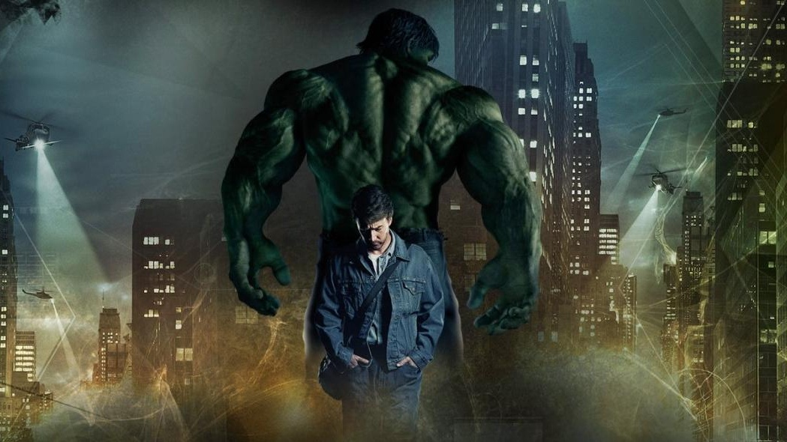
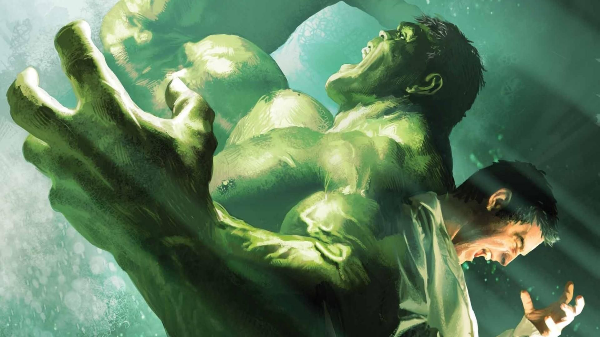
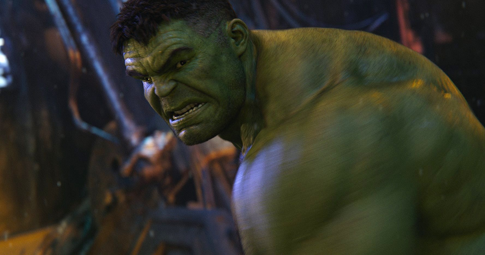

Mi Personaje Favorito
En esta página puedes hablar sobre tu personaje favorito y por qué lo eliges.
En mi caso, mi personaje favorito es Hulk. Me gusta porque es un personaje muy poderoso y a la vez vulnerable.
Además, su transformación de Bruce Banner a Hulk es un tema muy interesante y complejo.



